NTUA ARCH 4342 Computational Methods in Creative Arts and Sciences
MicroPulse
We are team 05 and we created this website to showcase our work in the
subject of Computer Sciences 2025. Our main goal was to create an
interactive "artwork" that is shaped by the user's musical input. Our
inspiration was the generative art of Casey Reas. Much like his work,
our project embraces unpredictability, structure, and fluidity all at
once. In general, music is vital to the artwork we have created since
we wanted to highlight the connection between art and music and how
our brains react to that mix. The particles on the screen represent
that idea since each one moves with purpose, like thoughts or emotions
triggered by music.
We invite you to interact, experiment, and immerse yourself! Let your
keyboard be the instrument! Let your imagination be the guide!
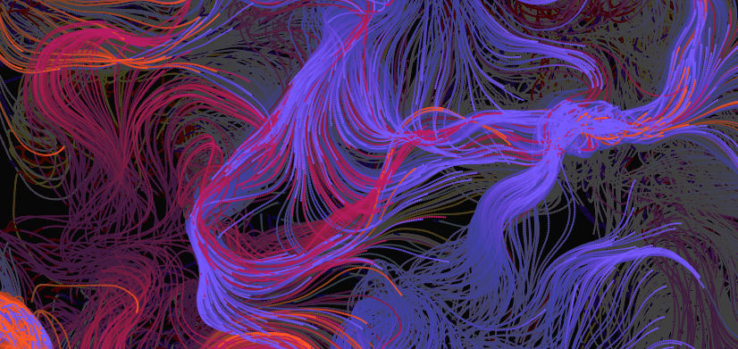
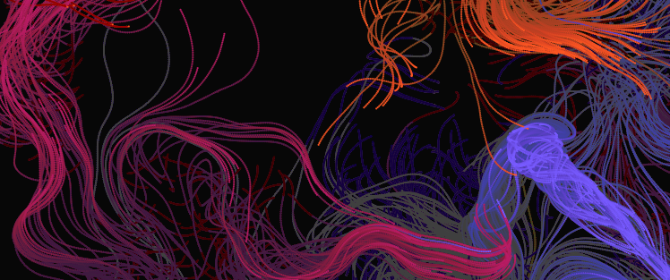
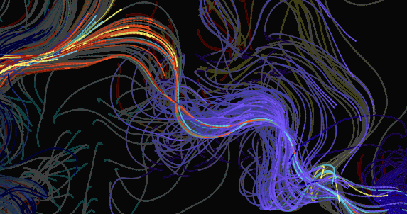
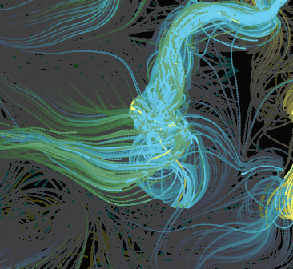
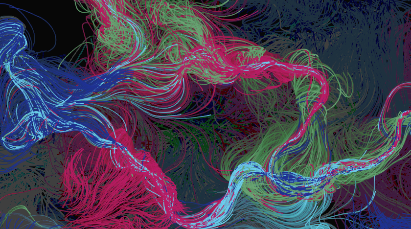
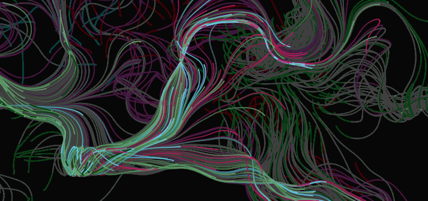
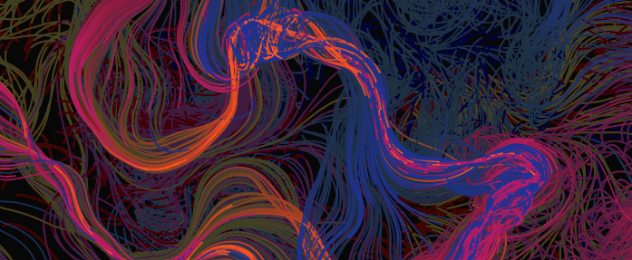
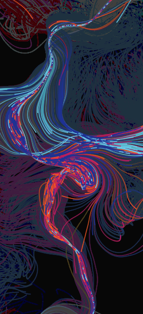
Here is a gallery of previous attempts
Inspiration
Inspired by the work of Casey Reas—especially pieces like MicroImage and Tissue—where simple rules lead to the creation of complex, organic forms. Having these pieces in mind, we wanted to build something that reacts not just visually, but emotionally—something that comes to life through interaction. We envision the piece as a kind of visual “score” that reacts to each keystroke, turning the user into an active creator rather than a passive observer. Music becomes a visual experience: colors, motion, and sound form the language through which the artwork communicates. In our project, the music is visualized. The way the colors flow, the particles move, the sounds shift—that’s the language of the piece. It’s our way of exploring how the human mind can interpret and express music, not just through sound, but through sight and interaction.
We're excited to see what each person will make with it!
Thought Process
This code creates an interactive audio-visual synthesizer where pressing specific keys on the keyboard or clicking on on-screen buttons plays musical notes and triggers colorful particle effects. Each note is associated with a specific sound frequency, color, and key. When a note is played, its corresponding oscillator produces a smooth sine wave sound that fades in and out. Simultaneously, particles are emitted in random directions from a random position, creating vibrant trails that follow their motion. These particles are influenced by Perlin noise to move organically and leave behind ghost trails for visual flair. A set of buttons is also generated to allow interaction, making the experience both musical and visually engaging.
About Us
(Μερικά λόγια για την ομάδα σας, τα ενδιαφέροντα ή τη συνεργασία σας.)We are Team 05, a group of Computer Science students passionate about blending creativity with technology. Inspired by the generative artworks of Casey Reas, our goal was to create an interactive visual experience where sound and motion come together. Through this project, we explored how music and algorithmic patterns can form a unique kind of digital art—one that responds to the user and evolves in real time. Each note played not only creates sound, but also releases particles that dance across the canvas, symbolizing the harmony between logic and imagination.


 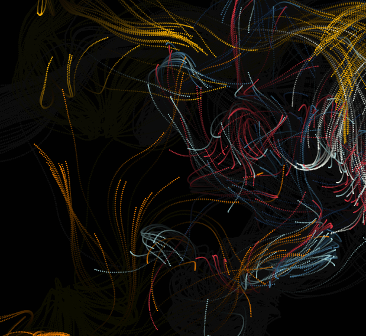
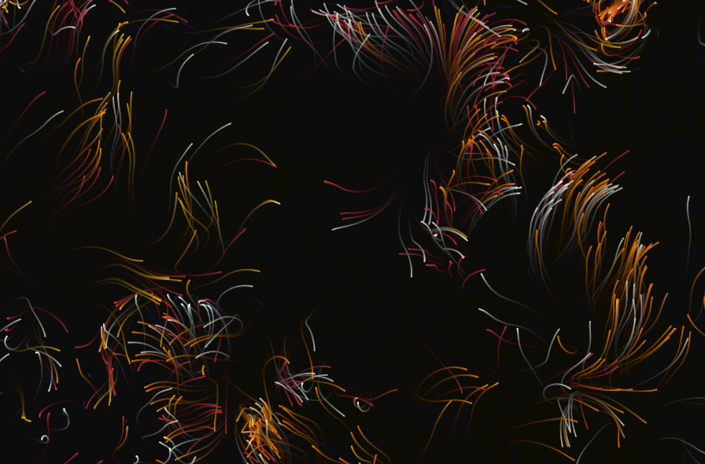
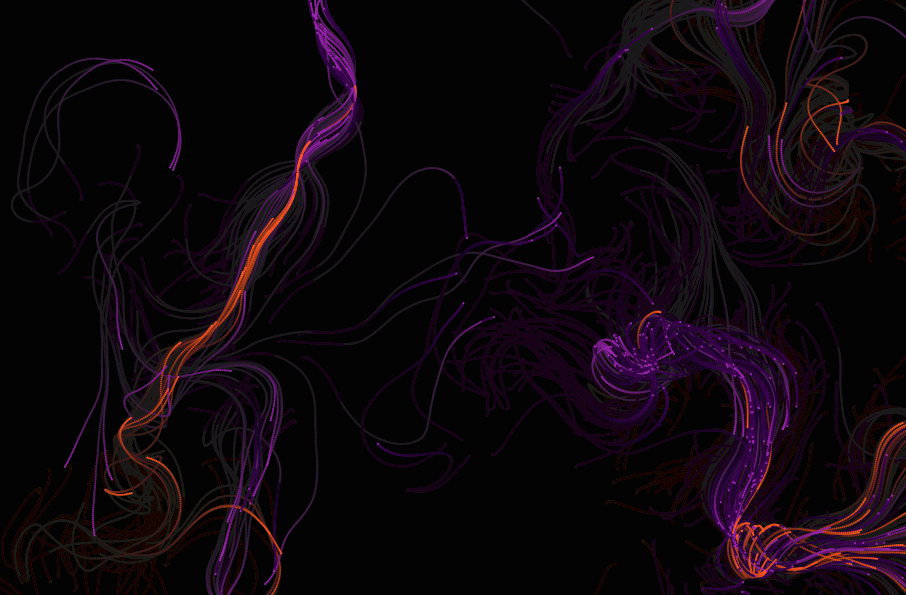
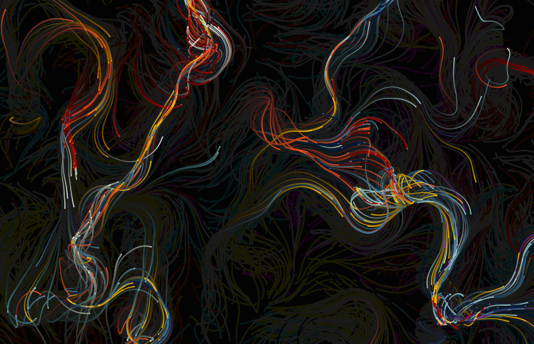
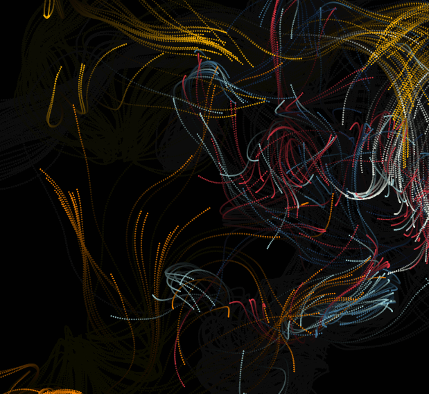
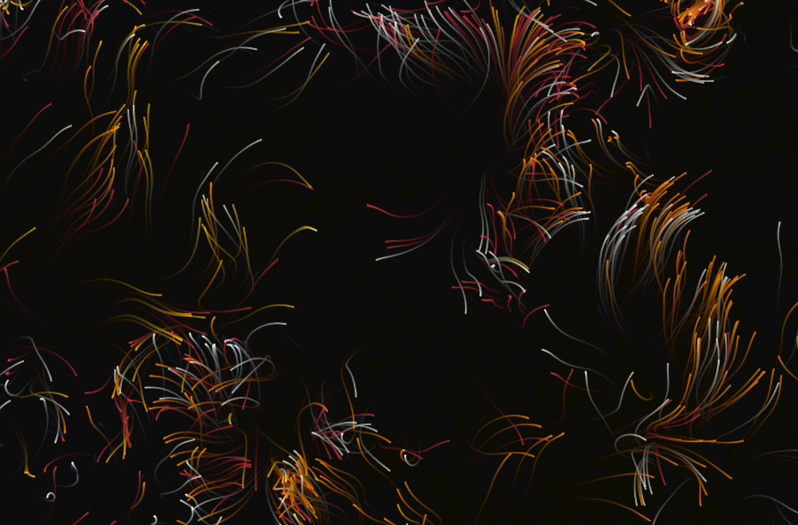
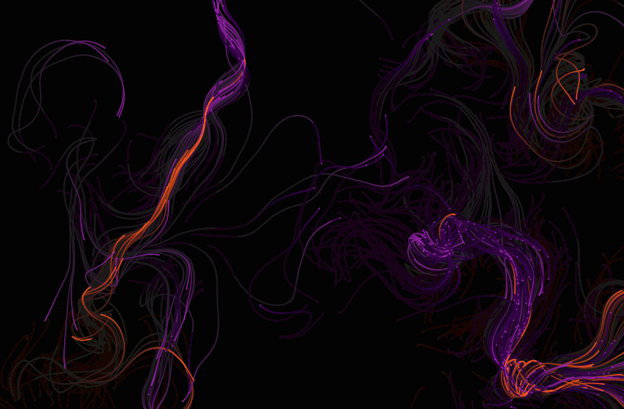
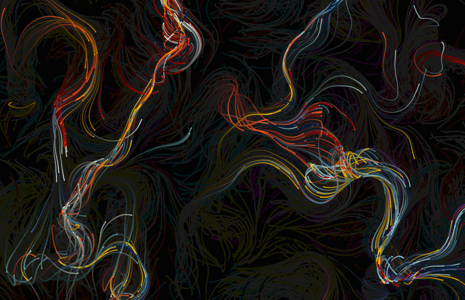